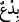
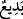
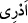

nasıl istiyorsunuz ki!
“Ben türedi bir elçi değilim.” “
’” kelimesi “bâ”nın kesresi ile “
yâni daha önce
benzeri görülmemiş şeyler” demektir. Müşrikler Peygamberimiz (s.a.)’den bir takım
mûcizeler isteyip inad ve kibirlerinden dolayı ona gayb haberlerini soruyorlardı.
Peygamberimiz (s.a.) onlara “Ben türedi bir elçi değilim” demekle emrolundu.
İleride başıma ne geleceğini, dünyada benim ve sizin işinizin sonunun hangi mecrâya
gideceğini, “bana ve size ne yapılacağını da bilmem”. Zira önceki peygamberlerden
bazıları mihnet ve musîbetlerden kurtulmuş, bazıları vatanından hicretle imtihan
edilmiş, bazıları da çeşitli fitne ve belâlarla sınanmıştır. Geçmiş ümmetlerin durumları
da böyledir. Onlardan bazıları yere batırılarak helâk edilmiş, bazılarının helâki ise
başlarına taş yağdırmakla olmuş, yine suretlerinin değiştirilmesi (maymun ve domuz
suretine çevrilmeleri) ile cezalandırılmışlardır. Kuvvetli rüzgâr ve fırtınayla, sayha ve
narayla, suda boğularak ve daha başka şekillerle helâk edilenler de vardır.
Ayetteki “
” fiili, dirâyet kökünden olup mânâ şudur: “Gelecekte başımıza ne
geleceğini ve dünyada benim ve sizin işinizin hangi mecrâda seyredeceğini
bilmiyorum.”
Peygamberimiz (s.a.) bu cihetlerden kendisine ve onlara ne muâmele yapılacağını
bilmediğini arz etmiştir. Sonunda üstün gelip yardım ve destek gören kendisi mi olacak,
yoksa onlar mı? Bunu da bilmediğini ifâde etmiştir. Sonra Allah Peygambere
vahyederek bu durumu kendisinin ve onların işinin sonunu ona bildirmiştir. Peygambere
hicreti emretmiş, kendisini insanların kötülüklerinden koruyacağını vaad etmiş ve ona
cihadı emretmiştir. İslâm dinini diğer bütün dinlere üstün kılacağını ve Peygamberi
onlara hükümran kılacağını ve onların kökünü keseceğini haber vermiştir.
Şöyle de denilmiştir: Burada bilinmeyen şeyin detay bilgiler olması da câizdir. Yâni
ben bana ve size dünya ve âhirette ne yapılacağının detaylarını bilmiyorum. Çünkü
gaybı bilemem, özet bilgi vardır. Zira Allah’ın orduları elbet üstündürler. Yine iyilerin
gidecekleri yer naîm cennetleridir, kâfirlerin gidecekleri yer cehennemdir.
Ebu’s-Suûd (r.a.) şöyle demiştir: Bu âyetin iniş sebebi olarak zikredilen şeye uygun
olan izah şudur: Peygamber (s.a.)’in bilmediği şeyler peygamberlik vazifelerinde
dünyevî olarak yaşanacak bir takım olaylardır. Yoksa âhirette meydana gelecek şeyler
değildir. Zira âhiret hallerini bilmek peygamberlik vazifelerindendir. Bu konuda her iki
tarafa da ne muâmele yapılacağı konusunda detaylı olarak bildiren vahiy gelmiştir.
Kelbî’den şu rivâyet yapılmıştır: Peygamber (s.a.) rüyasında hurma bahçeleri ve
ağaçları olan bir şehre hicret edeceğini görmüş, ashâbına bunu haber vermiş, onlar da
bunun Peygambere bildirilen bir vahiy olduğunu zannetmişler ve sevinmişlerdir.
Ey Sa’dî! “Vatan sevgisi” sahih bir hadistir doğru
Fakat “ben burada doğdum” diye zorlukta kalmamak gerek.
Ashâb-ı kirâm bu haberle birlikte Allah’ın dilediği bir süre beklediler.